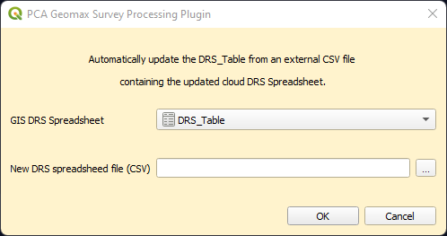

PCA Geomax Survey Processing is an internal QGIS Plugin specifically built for PCA survey data management and processing purposes.
It is a component of the new DRS/GIS integrated data management system, and it is based both in the new Geomax codelist system and in the raw survey data exported on shapefile format.
A tool to process and import the raw survey shapefiles generated from the Geomax into the GIS project.

A tool to copy and paste all the new data from the survey processed layer to the corresponding GIS layer.
A tool to automatically update the DRS_Table from an external CSV file.
A tool to create a backup copy of the active GeoPackage.
A correct data storage and management is a prerequisite for the use of the plugin. Consistency on file and folder naming and location will allow you to use all the available tools. Here is described the procedure step by step.
1.1 From the cloud, download the zip file containing the raw survey data exported in shapefile format from the Geomax.
1.2 On the project folder, navigate to …Project Data\04_Survey\Dated folders for processing\.
Here copy and paste the template folder SITECODE_YEARMONTHDAY and rename it according to the required format.
NB. If the site code has a special character in his name (e.g., \, / or -) or a space, avoid those characters replacing them with an underscore ‘_’ or use the site name instead. The special character can generate an error in the plugin processing.
1.3 Copy the zip file in the subfolder ...raw data\SHP\ and unzip it in a new folder.
On QGIS, run the tool .
An Explore window will open. Navigate to the folder containing the raw shapefiles (the folder generated unzipping the file).
E.g., …\Project Data\04_Survey\Dated folders for processing\raw data\SHP\SDFSF22_20220728\SDFSF22_20220728_SHP

The tool will generate automatically:
a) a new subfolder in your daily parent folder called `Processed_shapefiles` that contains a processed copy of the raw shapefiles (Coordinates Reference System corrected to EPSG:27700, field name formatted to respect the QGIS Template)
b) A new group in the QGIS project called `survey_data_temp_DATE` where DATE is the date when the raw shapefiles were exported.
This group will contain the processed shapefiles ready to be used in the QGIS project for data processing.
If one or more empty layers were generated from the Geomax, they will be excluded from the importing.
A message will confirm the success of the operation, providing also a list of the excluded layers.
Errors and exceptions
If the selected folder doesn’t contain any shapefile an error message will appear:

If the plugin is reused on the same raw shapefile folder, it will rise a warning message:
The message informs that the ‘Processed folder’ already exists and that the use of the plugin will overwrite it, deleting also possible edits done on the processed layers.
If ‘Yes’ is selected, an Explorer window will automatically open at the folder address, to consent the user to manually delete the folder before re-run the plugin.
Run the tool  from the PCA Geomax Survey Processing plugin.
from the PCA Geomax Survey Processing plugin.
This tool will copy and paste all the data from the survey processed layer to the corresponding GIS layer
(e.g., from Polygon_INTERVENTION_PLY_processed' to 'Interventions', from 'Lines_SECTION_LN_processed' to 'Sections' and from 'Points_LEVELS_PT_processed' to 'Levels').
After being successfully copied, the survey processed layer is removed from the TOC. A message will confirm the success of the operation, providing also a list of the copied layers.
Not all the layers will be copied, because some of them have not a corresponding GIS layer.
For example, while in QGIS Archaeological Features, Modern, Layers, etc.… are recorded as polygons, on site are surveyed as lines.
This will generate some linear processed layers without any correspondence on the GIS layers.
These layers will stay available in the project as a background data for helping during the digitizing of the features.
If no matching layers were found, the tool will return a different message.
Since the live version of the DRS Spreadsheet is contained into the main geopackage, a dedicated tool to help the update of the spreadsheet is available in the toolbar.
Running the tool will open a dialog box where is possible to select
a. the active DRS_Table from the GIS layer list that will be overwritten.
b. an external .CSV file containing the update version of the cloud DRS Spreadsheet (usually downloaded from the DRS Google Cloud). To select the file, press  and, on the Explorer window, navigate to the location of the selected file.
and, on the Explorer window, navigate to the location of the selected file.

A message will confirm the success of the operation.
After completing all the digitizing and the required plan corrections, is a good practice to create a backup copy of the main geopackage.
To help in the process, the plugin offers a dedicated tool .
To use it, just any of the GIS layers from the Layer panel. The tool will generate automatically a new backup copy of the active geopackage, renamed using the format ‘DATE_TIME_geopackagename’ , in the folder ……\Project Data\03_GIS_Projects\03_GIS_Site_Plan\_Geopackage_Backup.
A message will confirm the success of the operation.